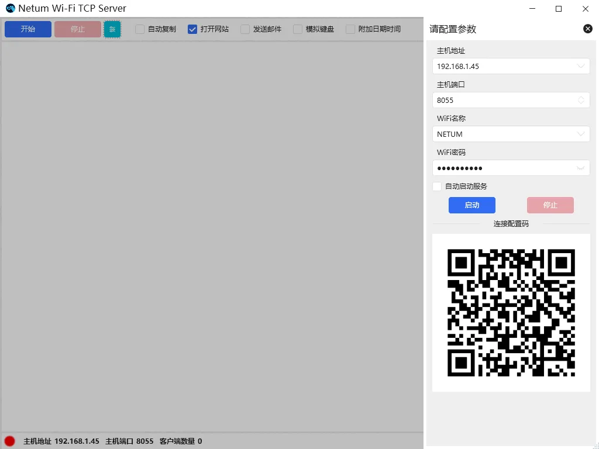
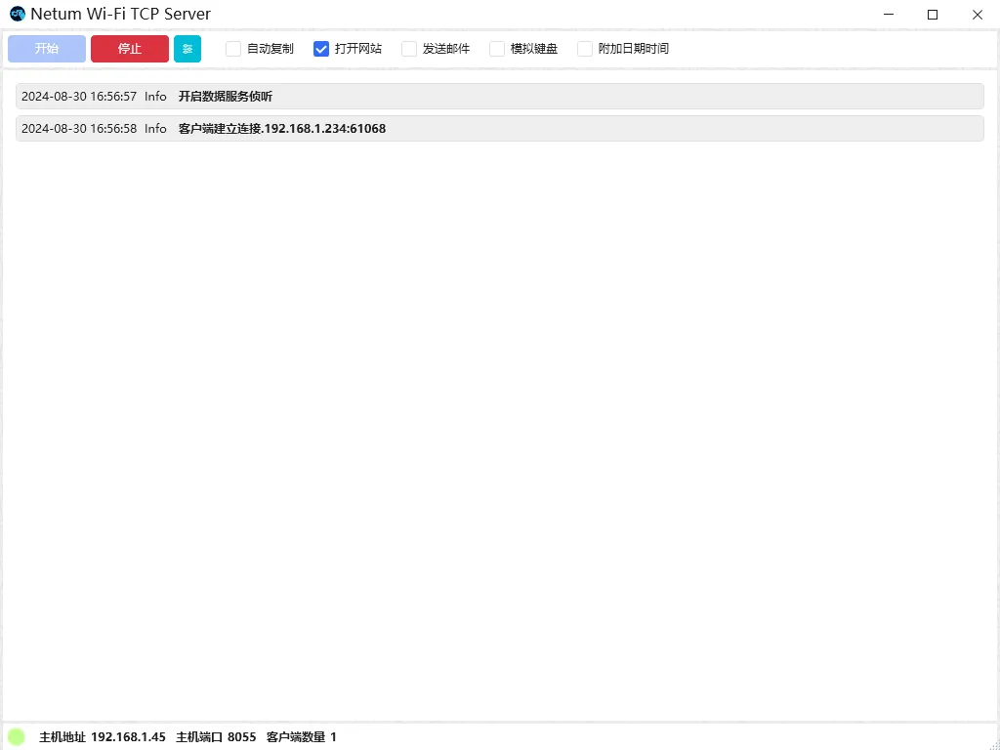

Использовать TCP клиент для передачи данных#
Быстрая конфигурация#
Примечание
При использовании стороннего программного обеспечения для построения TCP сервера, вы можете использовать эту опцию для конфигурации.
Демо-программа#
Нажмите на ссылку ниже, чтобы загрузить демо-программное обеспечение: Netum Wi-Fi TCP Server
Сделать соединение#
Скачайте демо-программу и распакуйте его в папку.
Откройте демонстрационную программу, введите информацию WiFi и информацию о TCP сервере, которую сканер должен подключиться, и используйте сканер для сканирования QR-кода ниже.

Нажмите, чтобы запустить службу или запустить TCP сервер через программирование.
Дождитесь активного подключения сканера к службе TCP Server программного обеспечения.

Примечание
Адрес хоста: IP-адрес компьютера, на котором находится служба TCP Server.
Порт хоста: номер порта, открытый службой TCP Server.